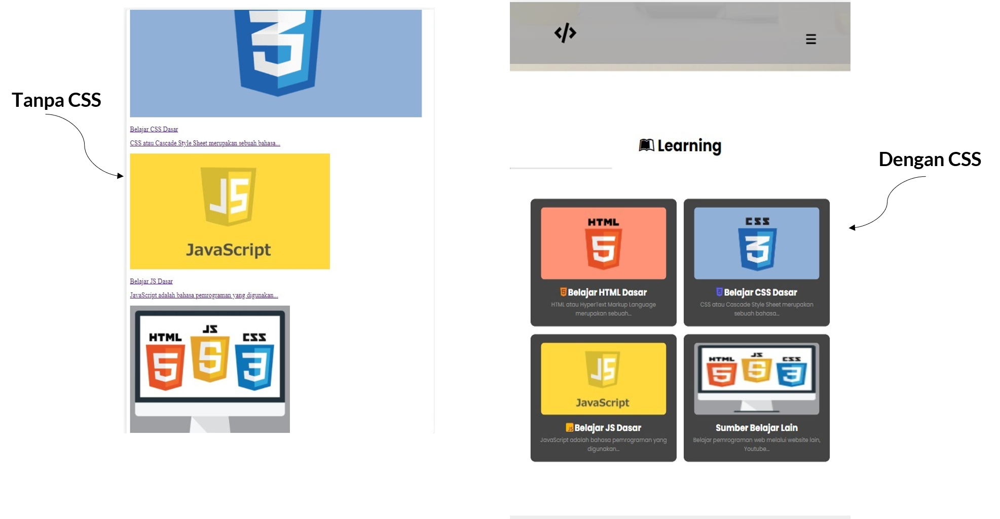
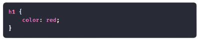
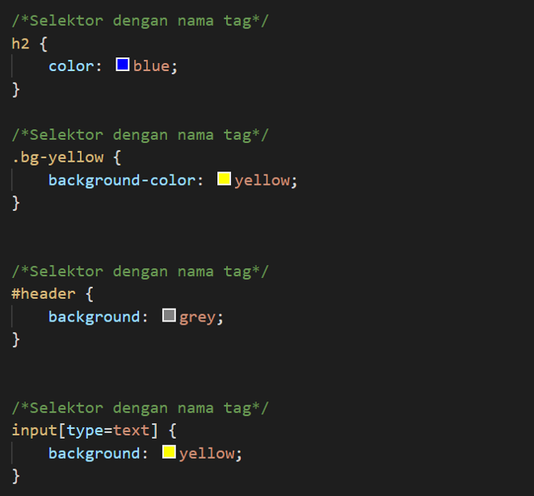
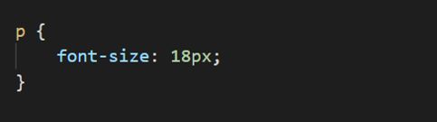
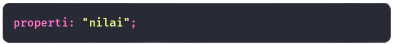
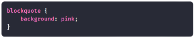
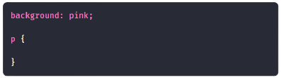

Wisnu • Penulis Artikel • 22 Agustus 2021
Pengenalan Dasar CSS untuk Pemula

CSS adalah bahasa kedua yang harus dipelajari oleh Web developer
Pengetahuan tentang CSS sangatlah penting bagi seorang web developer, karena dengan CSS kita bisa :
- Halaman landing page menarik
- Tema dari blog
- Mengatur tata letak
- Desain lebih menarik
- dan sebagainya
Contohnya, tampilan website ini dengan CSS dan tanpa CSS:
Tentu perbedaannya sangat jauh, baik dari segi tata letak atau segi desain
Pada artikel ini, kita membahas pengenalan dasar CSS, seperti :
- Apa itu CSS?
- Struktur Dasar CSS
- Cara Menuliskan CSS di HTML
Apa itu CSS?
CSS atau Cascade Style Sheet merupakan sebuah bahasa untuk mengatur tampilan web sehingga terlihat lebih menarik dan indah
Dengan CSS kita dapat mengatur layout (tata letak), warna, font, garis, dan lain-lain.
Variasi atau Versi CSS
Sejak awal diperkenalkan CSS memiliki beberapa variasi:
- CSS 1: adalah versi pertama (17 Desember 1996)
- CSS 2: adalah versi ke-2 (Mei 1998)
- CSS 2.1: (7 Juni 2011)
- CSS 3: (2021)
- CSS 4: masih dalam pengembangan
Lalu apa beda dari setiap versi?
Tentunya ada penambahan dan pengurangan..
Struktur Kode atau Sintaks Dasar CSS
Struktur kode CSS terdiri dari tiga bagian:
- Selektor
- Blok Deklarasi
- Properti dan nilainya
Contoh:

Mari kita bahas satu per satu..
Selektor
Selektor adalah kata kunci untuk memilih elemen HTML yang akan diatur
Contohnya:
Artinya: Kita memilih semua elemen <h1>, lalu diberikan warna teks red (merah)
Selektor dapat berupa nama tag, class, id, dan atribut.
Contoh:
Blok Deklarasi
Blok deklarasi adalah tempat kita menuliskan atribut-atribut CSS yang akan diberikan ke pada selektor
Contoh:
Artinya, kita akan mengatur ukuran font dari tag <p> sebesar 18px.
Blok deklarasi dimulai atau dibuka dengan tanda kurung kurawal { lalu ditutup dengan }.
Properti dan Nilainya
Properti merupakan atribut atau sekumpulan aturan yang akan diberikan kepada elemen yang dipilih
Setiap properti harus diakhiri dengan titik koma (;). Apabila hanya terdapat satu properti, boleh tidak menggunakan titik koma.
Properti harus ditulis di dalam blok deklarasi.
Contoh:
Tulisan properti salah:
Cara Menulis kode CSS dalam HTML
Penulisan kode CSS di HTML dapat dilakukan di dalam tag <style>.
Tag tersebut dapat ditulis di dalam tag <head> atau <body>.
Kebanyakan orang menulisnya di dalam tag <head>. Perhatikan contoh berikut ini:
Hasilnya, elemen <p>yang akan berwarna merah:
Selain dengan cara ini, ada dua cara lagi yang bisa digunakan:
- Inline CSS
- Eksternal CSS
Selamat~ kamu sudah mengenal CSS dan mengetahui sintaks CSS
Sekian pengenalan dasar CSS, terima kasih..